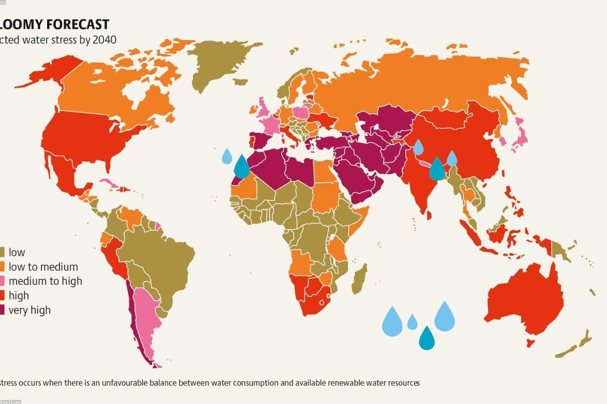
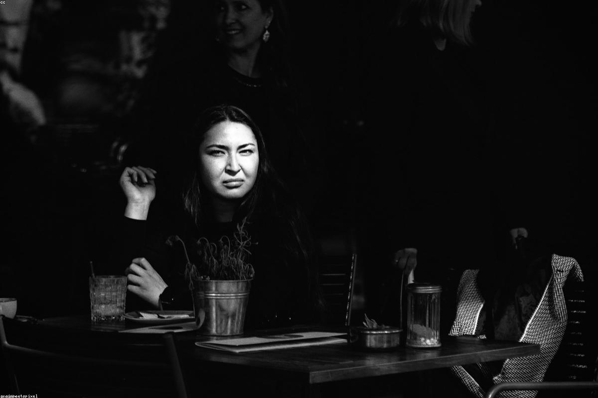

★★★★★
«Ходили сюда ещё студентами, а теперь привели своих детей. Медовик ровно такой же, как был! Очень душевно, что место вернулось.»
Городское кафе, где встречались поколения нижегородцев в нулевые — снова открыто. Европейская и домашняя кухня, завтраки с рассвета и честные бизнес-ланчи. По-прежнему для своих.
В нулевые «ВКТ» было точкой на карте Нижнего, куда заходили после пар, назначали первые свидания и отмечали зарплату. Простая еда, негромкая музыка и ощущение, что тебе здесь рады, — за это его и любили.
Спустя годы мы вернули легенду — но уже по-новому. Сохранили домашние рецепты и тёплую интонацию, добавили честные продукты, спокойный современный интерьер и кухню, в которой европейская классика соседствует с тем самым оливье. Это всё ещё кафе на каждый день — доступное, уютное и своё.


«Ходили сюда ещё студентами, а теперь привели своих детей. Медовик ровно такой же, как был! Очень душевно, что место вернулось.»
«Беру здесь бизнес-ланч почти каждый день — порции нормальные, готовят быстро, цены адекватные для центра. Солянка отдельная любовь.»
«Уютно, чисто, вкусно. Заходили на завтрак — сырники и раф на солёной карамели топ. Персонал внимательный, вернёмся обязательно.»
Большая Покровская, 1
Нижний Новгород
Главная пешеходная улица города, 2 минуты от площади Минина и Пожарского. Ближайшая станция метро — «Горьковская».
Построить маршрутБольшая Покровская, 1
Нижний Новгород
Пн–Чт · 08:00–23:00
Пт–Сб · 08:00–01:00
Вс · 09:00–23:00